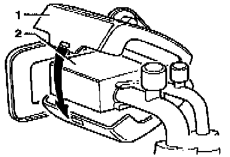

Expansion Valve: Fundamentals and Basics

1 - Insulator
2 - Expansion valve
Insulation is used around expansion valve to prevent moisture condensation) build-up and to protect expansion valve from high engine compartment temperatures and the resulting decrease in A/C system cooling performance.
- Install insulator -1- over expansion valve -2- (arrow).
- Check insulator for damage and proper fit,and replace if necessary.